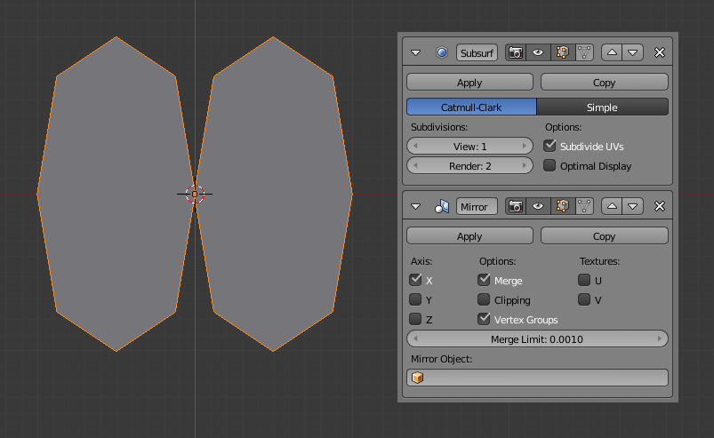

介绍–一钱不名¶
修改器是以非破坏性的方式影响对象的操作。使用修改器，您可以执行多次效果，要不然手动做会很很乏味的 （比如表面细分修改器）不会影响你的物体的基本几何形状。
They work by changing how an object is displayed and rendered, but not the geometry which you can edit directly. You can add several modifiers to a single object to form The Modifier Stack and Apply a modifier if you wish to make its changes permanent.
Modifiers Menu.
修改器有四种类型:
- 修改类
*修改*组修改器是一个类似于形变修改器（看下面），不过不会直接影响物体形状，但会影响物体的一些其他数据，比如顶点组。
- 生成类
修改器的 生成 组是建设性工具会它会改变对象外观或自动增加新的几何对象.
- 形变类
变形 组修改器只是改变物体的形状，不会增加新的几何体,可用于网格物体,文字、曲线、曲面和 晶格物体。
- 模拟
*模拟*修改器激活模拟。在大多数情况下,这些修改器会自动添加到堆栈修改器*粒子系统*或*物理 *模拟启用。他们唯一的作用是定义在修改器堆栈所代表的基本数据的工具。一般来说,这些修改器的属性都有单独的面板。
界面¶

Panel Layout (Subdivision Surface as an example).
Each modifier has been brought in from a different part of Blender, so each has its own unique settings and special considerations. However, each modifier’s interface has the same basic components, see Fig. Panel Layout (Subdivision Surface as an example)..
在顶部*菜单栏*。每一个图标代表了不同的修改器（从左到右）：
- 箭头标志
通过折叠操作，使它只显示标题而不显示具体的选项。
- 图标
修改器标题上的图标是方便快速显示参考用的。
- 名称
每个对象每个修改器都有一个唯一的名称.两个（多个）修改器在一个物体上名称必须是唯一的。但是如果物体对像的不同修改器可以有相同的名称。默认的名称是基于修改器类型的名称。
- 摄像机图标
切换修改器显示结果作用于渲染器显示
- 眼睛图标
- Toggles visibility of the modifier effect in the 3D View.
- 方块图标
修改器显示作用于物体编辑模式下。还是以原始的物体边框显示进行编辑。
- 三角网格图标
- When enabled, the final modified geometry will be shown in Edit Mode and can be edited directly.
- 上箭头图标
向上移动修改器堆栈
- 下箭头图标
向下移动修改器堆栈
- 十字图标
用于删除修改器
注解
方块图标和三角网格图标不能使用或显示是由于修改器类型决定的。
在标题下方有两个按钮
- 应用
让修改器 “real”-使修改器应用于几何物体上，并删除此修改器。
- 复制
复制一个新的修改器到堆栈的底部。
警告
应用修改，应用处于不在堆栈顶层的修改器，可能会产生意想不到的结果
在标题栏下面，所有修改器所拥有的选项会显示出来。
The Modifier Stack¶
Modifiers are a series of non-destructive operations which can be applied on top of an object’s geometry. They can be applied in just about any order the users chooses.
This kind of functionality is often referred to as a “modifier stack” and is also found in several other 3D applications.
In a modifier stack the order in which modifiers are applied has an effect on the result. Fortunately modifiers can be rearranged easily by clicking the convenient up and down arrow icons. For example, the image below shows Subdivision Surface and Mirror modifiers that have switched places.

The Mirror modifier is the last item in the stack and the result looks like two surfaces. |

The Subdivision surface modifier is the last item in the stack and the result is a single merged surface. |
{kind=link}
Modifiers are calculated from top to bottom in the stack. In this example, the desired result (on right) is achieved by first mirroring the object, and then calculating the subdivision surface.
Example¶
In this example a simple subdivided cube has been transformed into a rather complex object using a stack of modifiers.